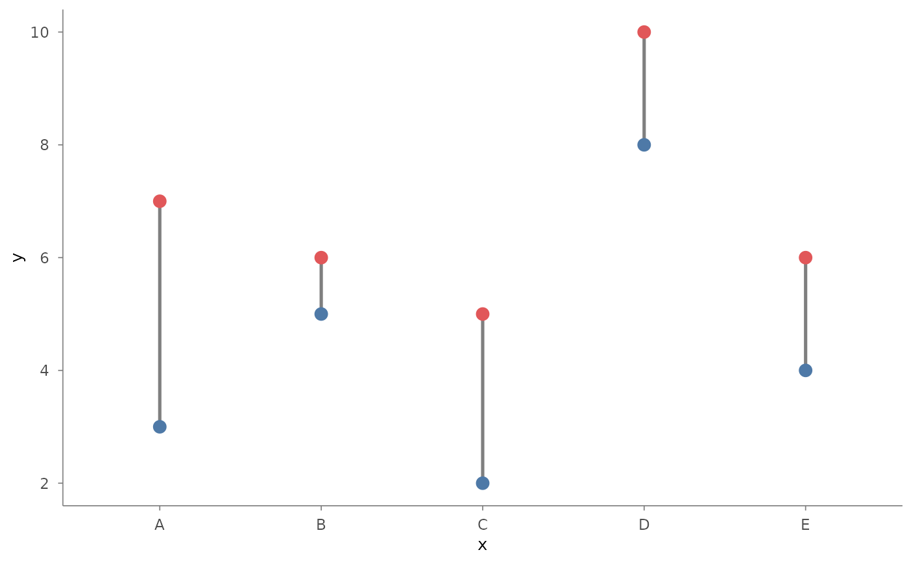

Creates a dumbbell chart with two connected points showing before/after
or paired comparisons. This is a syntax-sugar composite mark
combining two mark_point calls and a geom_segment.
Usage
mark_dumbbell(
plot,
mapping = NULL,
data = NULL,
colour_start = ._MARK_STYLE$primary,
colour_end = ._MARK_STYLE$secondary,
line_colour = ._MARK_STYLE$soft,
point_size = ._MARK_STYLE$point_head,
line_width = ._MARK_STYLE$lw_data,
...
)Arguments
- plot
A plotit object
- mapping
Optional new aesthetics
- data
Optional data for this layer
- colour_start
Colour for the start point (default
._MARK_STYLE$primary="#4E79A7").- colour_end
Colour for the end point (default
._MARK_STYLE$secondary="#E15759").- line_colour
Colour for the connecting line (default
._MARK_STYLE$soft="grey50").- point_size
Size for both dumbbell points (default 3).
- line_width
Width for the connecting line (default 0.9).
- ...
Other arguments passed to
mark_point()calls
Details
Equivalent expansion:
p |> mark_rule(x = x, xend = x, y = y_start, yend = y_end) |>
mark_point(x = x, y = y_start, colour = colour_start) |>
mark_point(x = x, y = y_end, colour = colour_end)Examples
df <- data.frame(
cat = LETTERS[1:5], before = c(3, 5, 2, 8, 4),
after = c(7, 6, 5, 10, 6)
)
plotit(df, encode(x = cat, y = before, yend = after)) |>
mark_dumbbell()
